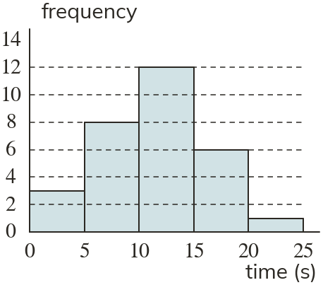

Westonbirt Maths · Histograms
Bar Charts and Histograms
Name: ______________________ Date: ____________
1
Draw a bar chart of the times seconds, where has frequency has has and has
2
The bar chart shows reaction times. How many are in ?

3
Using the chart in question Kim says times are more than seconds. Find her mistake and correct it.
4
Using the chart in question how many times are seconds or less?
5
Using the chart in question what fraction of the times are over seconds?
Ext
Classes 0–10, 10–40 and 40–50 have frequencies and
Explain why a bar chart with heights and misleads.
Explain why a bar chart with heights and misleads.